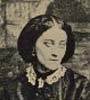
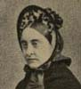
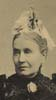
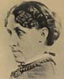
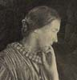
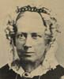
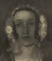

Collective Biographies of WomenAn Annotated Bibliography
Alison Booth
34.
Armytage, A. J. Green [or Green-Armytage]. Maids of Honour: Twelve Descriptive Sketches of Single Women Who Have Distinguished Themselves in Philanthropy, Nursing, Poetry, Travel, Science, Prose. With Portraits. London and Edinburgh: Blackwood, 1906.
Search OCLC WorldCat for this title.
Search Google Books for this title.
Armytage, A. J. Green [or Green-Armytage]. Maids of Honour: Twelve Descriptive Sketches of Single Women Who Have Distinguished Themselves in Philanthropy, Nursing, Poetry, Travel, Science, Prose. With Portraits. London and Edinburgh: Blackwood, 1906.
TOC: Hannah More; Mary Carpenter; Caroline Lucretia Herschel; Sister Dora [Dorothy Wyndlow Pattison]; Mary Kingsley; Adelaide Anne Procter; Marianne North; Jean Ingelow; Louisa Alcott; Christina Rossetti; Agnes Strickland; Epilogue: Mary Lamb.
Cf. same title by Lewis Melville [i.e. Lewis Saul Benjamin], Frank Ranelagh [i.e. Robert Folkestone Williams].
-
Adelaide Anne Procter
-
 Agnes Strickland
Agnes Strickland -
 Caroline Herschel
Caroline Herschel -
Christina Rossetti
-
 Hannah More
Hannah More -
Jean Ingelow
-
Louisa Alcott
-
Marianne North
-
Mary Carpenter
-
 Mary Kingsley
Mary Kingsley -
Mary Lamb
-
 Dorothy Wyndlow Pattison. ("Sister Dora.")
Dorothy Wyndlow Pattison. ("Sister Dora.")
Search OCLC WorldCat for this title.
Search Google Books for this title.